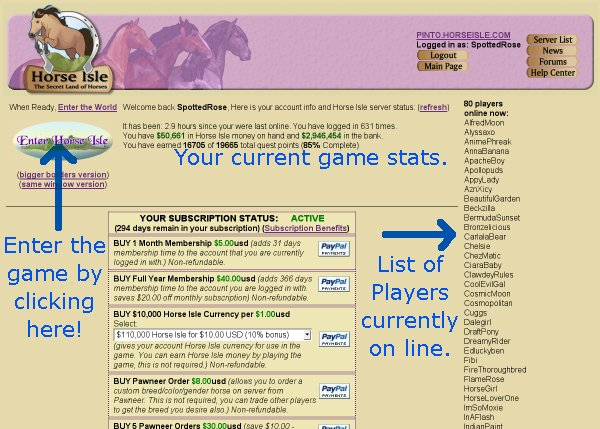

The next page you will see is the Accounts Page. This page will be available all the while you are playing.
The Player List on the right shows you who is currently playing. Players whose names are in bold blue letters are people you have made Buddies of yours. People whose names are in bold green letters are Moderators and those names in bold red are Administrators.
Your current statistics are reiterated on this page, but they are not updated in real-time. Click "refresh" to get your current stats.
There are also many options for membership from which you can choose; you can subscribe for a month or a year, buy some virtual (game) money, or buy Pawneer Orders, which allow you to order a horse of your choosing without having to rely on finding a wild one or buying one from another player.
In the upper right hand corner are several more options for you; you can go back to the server list, read the latest news, talk about the game in the Forums, or check out the Help Center.
When you're ready to proceed to the game, click "Enter Horse Isle."